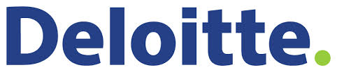
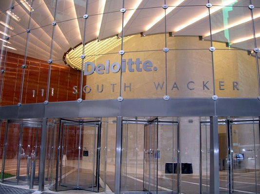

Deloitte
Deloitte Touche Tohmatsu Limited, commonly referred to as Deloitte, is one of the "Big Four" professional services firms along with PricewaterhouseCoopers (PwC), Ernst & Young, and KPMG.

Deloitte is a professional services network. Deloitte provides audit, tax, consulting, enterprise risk and financial advisory services with more than 200,000 professionals in over 150 countries. In FY 2012–13, it earned a record $32.4 billion USD in revenues.
In 2012, it was reported that in the UK, Deloitte had the largest number of clients amongst FTSE 250 companies.
Its global headquarters are located in New York City, United States.
For many years, the organization and its network of member firms were legally organized as a Swiss Verein. As of 31 July 2010, members of the Verein became part of Deloitte Touche Tohmatsu (DTTL), a UK private company, limited by guarantee. Each member firm within its global network remains a separate and independent legal entity, subject to the laws and professional regulations of the particular country or countries in which it operates.
This structure is similar to other professional services networks which seek to limit vicarious liability for acts of other members. As separate and legal entities, member firms and DTTL cannot obligate each other. Professional services continue to be provided by member firms only and not DTTL. With this structure, the members should not be liable for the negligence of other independent members. This structure also allows them to be members of the IFAC Forum of Firms which is network of accounting firm networks.
While in 1989, in most countries, Deloitte, Haskins & Sells merged with Touche Ross forming Deloitte & Touche, in the United Kingdom the local firm of Deloitte, Haskins & Sells merged instead with Coopers & Lybrand (which today is PwC). For some years after the merger, the merged UK firm was called Coopers & Lybrand Deloitte and the local firm of Touche Ross kept its original name. In the mid-1990s however, both UK firms changed their names to match those of their respective international organizations.
While the full name of the UK private company is Deloitte Touche Tohmatsu Limited, in 1989 it initially branded itself DTT International. In 2003, the rebranding campaign was commissioned by Bill Parrett, the then CEO of DTT, and led by Jerry Leamon, the global Clients and Markets leader.
According to the company website, Deloitte now refers to the brand under which independent firms throughout the world collaborate to provide audit, consulting, financial advisory, risk management, and tax services to selected clients.
In 2008, Deloitte adopted its new "Always One Step Ahead" (AOSA) brand positioning platform to support the existing Deloitte vision: "To be the Standard of Excellence". AOSA represents the global organization’s value proposition, and is never used as a tagline. The recent launch of the Green Dot ad campaign also aligns with Deloitte’s brand strategy and positioning framework.